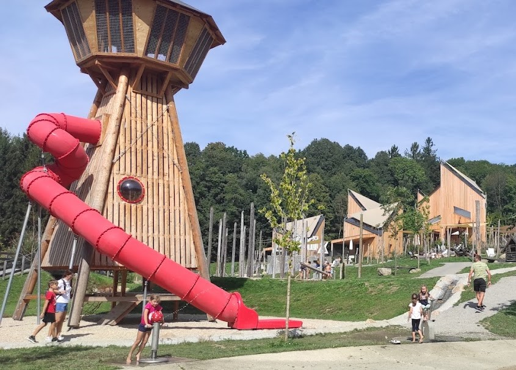
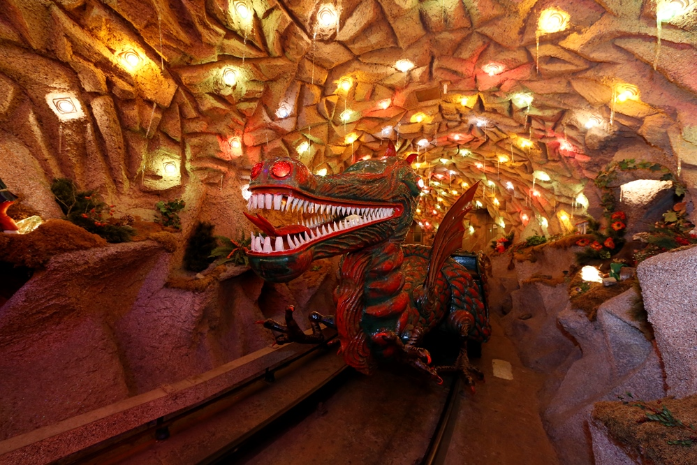
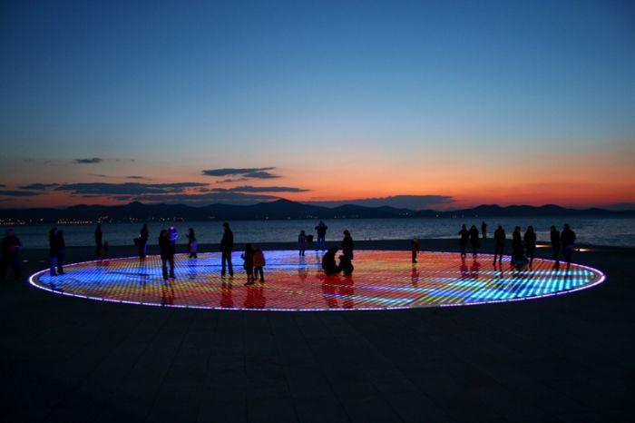

Tipy na výlety
Jelikož jsem aktuálně na rodičovské dovolené, rozhodla jsem se krátce představit výlety, které jsme v nedávné době absolvovali. Bydlím na lipensku a často jezdíme do Rakouska, dva z nich jsou tedy z Horního rakouska a ten třetí tip je z naší podzimní dovolené v Chorvatsku.
Ikuna Park
Prvním místem, které bych Vám ráda představila je dětský outdoor Natur Park Ikuna. Zábavný park naleznete v hornorakouském Natternbachu a od českých hranic je vzdálen přibližně hodinu cesty.
Název IKUNA vznikl spojením slov – Inspiration (inspirace), Kunst (umění) a Natur (příroda). Naleznete zde vodní hřiště, motokárovou dráhu, lezecké stěny a spousty další zábavy pro větší i malé děti.

Linz a Dračí jeskyně
Město Linec asi není potřeba rozsáhle představovat, krásné město ležící na řece Dunaj, malé kavárny, příjemné hospůdky, ale také nepřeberné množství malých i velkých dětských hřišt.
My jsme si udělali výlet na začátku září. Pokud cestujete s dětmi doporučila bych navštívit tkz. Jeskynní železnici a pohádkový svět Grottenbahn ležící na vrcholu kopce Postlingberg.
Do tohoto úžasného dětského pohádkového světa se dostane z hlavního náměstí nejstrmější tramvajovou tratí v Evropě a to spojem č. 50.
Zadar a mořské varhany
Mým posledním čerstvým tipem jsou Mořské varhany v Zadaru. Pokud si chcete užít přenádherný západ slunce a slyšet jak moře zpíva, lepší místo nenajdete.
